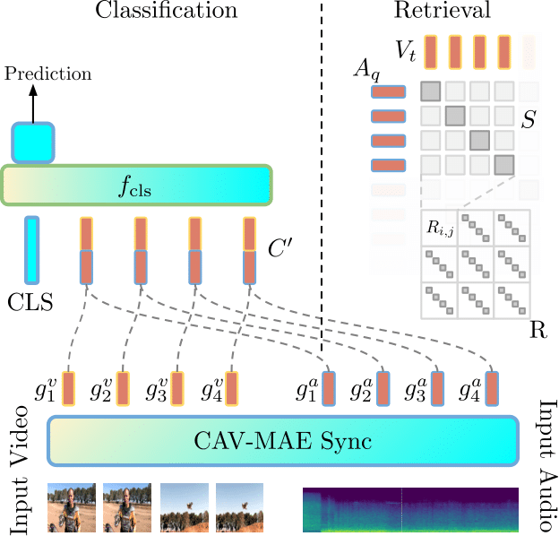

Edson Araujo
I'm a PhD Student at Goethe University Frankfurt, working with Prof. Hilde Kuehne. Our work is part of the MIT-IBM Watson AI Sight and Sound Project, through which we work with several researchers on multi-modal learning.
I did my Master's in Computer Science at UFMG under the supervision of Prof. Erickson Nascimento, period in which I was able to collaborate in different research topics such as video summarization and image descriptors.
CV / Scholar / Twitter / Bluesky / Github
Email: [last_name] at uni-frankfurt.de

🔥 News
05.2025 CAV-MAE Sync is going to be presented at the LatinX, MMFM and Sight and Sound Workshops at CVPR 2025!
02.2025 CAV-MAE Sync was accepted to CVPR 2025
10.2023 I joined the PhD Program under the supervision of Prof. Hilde Kuehne
05.2023 I defended my Master Thesis on "An Audiovisual Approach for Video Summarization Using Psychoacoustic Features"
Research
I'm interested in multimodal learning, self-supervised methods and audiovisual representation learning. Some papers are highlighted.
Publications
|  |
CAV-MAE Sync: Improving Contrastive Audio-Visual Mask Autoencoders via Fine-Grained Alignment
Edson Araujo, Andrew Rouditchenko, Yuan Gong, Saurabhchand Bhati, Samuel Thomas, Brian Kingsbury, Leonid Karlinsky, Rogerio Feris, James R. Glass, Hilde Kuehne CVPR, 2025 Project Page / Code / arXiv We improved audio-visual learning by treating audio as a temporal sequence aligned with video frames instead of global representations, and by separating competing objectives with dedicated tokens. Our approach outperforms more complex architectures on retrieval, classification, and localization tasks across multiple datasets. |